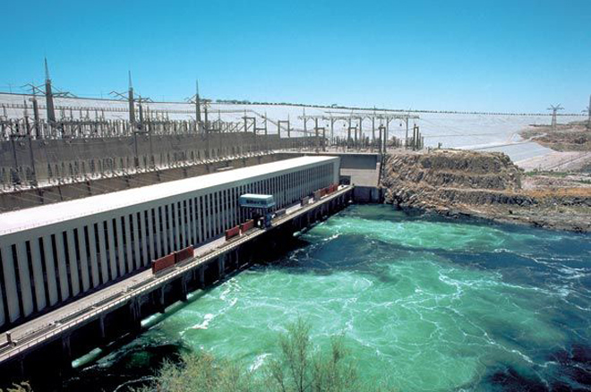
toAswan's High Dam is modern Egypt's most lauded and yet controversial building project. Begun in 1960 and taking 11 years to complete, the dam was President Nasser's pet project and greatest achievement and was achieved through funding and technical help from the Soviet Union.
The High Dam has some staggering statistics. Its building took 42.7 billion cubic metres of stone (17 times the volume of the Pyramid of Cheops) with its total length being 3.6 kilometres. It is 980 metres thick at the base and 40 metres at the top. The average capacity of the dam's reservoir (Lake Nasser) is 135 billion cubic metres with a maximum capacity of 157 billion.
The dam brought fantastic benefits to the country, allowing sustainable electricity across the country and increasing the amount of arable land in Egypt. However, it also put an end to the annual Nile flood, which fertilized farmer fields with its rich silt deposits, and the creation of Lake Nasser (the world's largest artificial lake) wiped away much of Upper Egypt's vast heritage as the waters rose.,
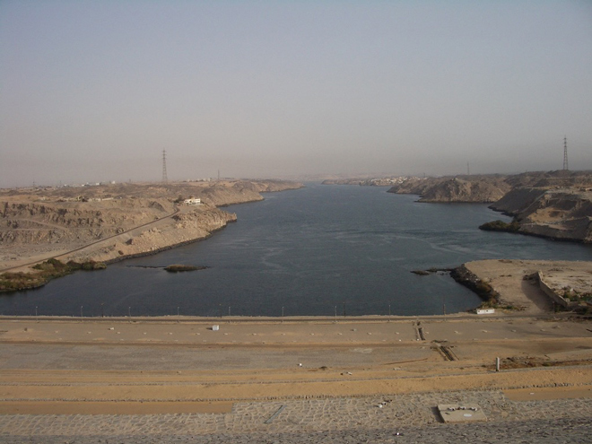
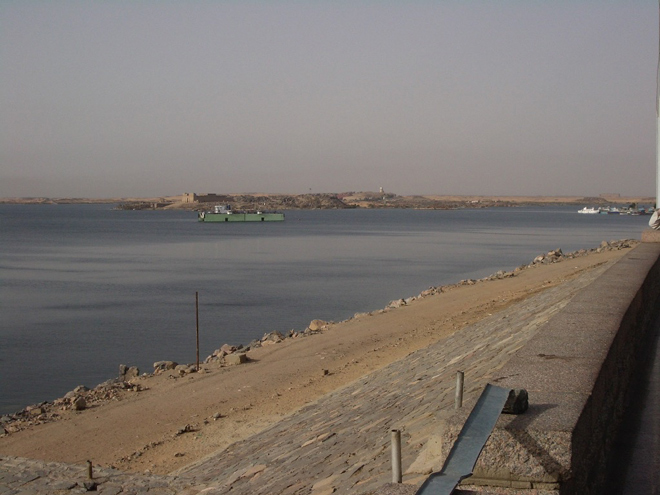
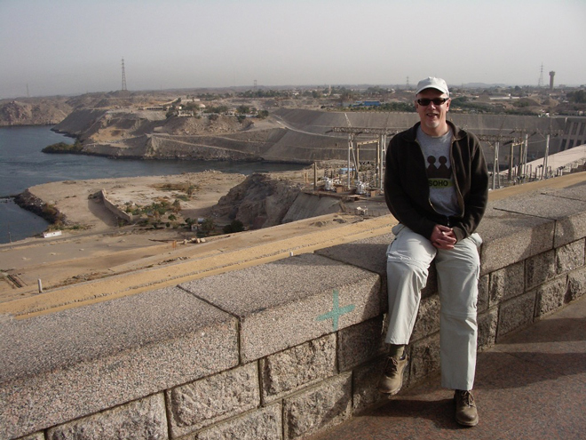
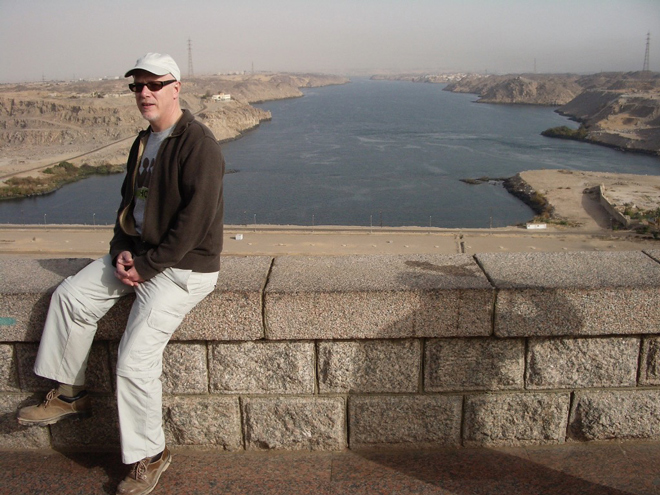
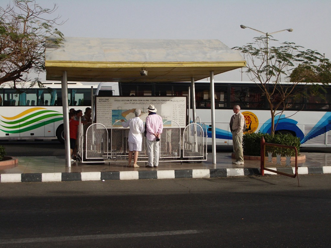
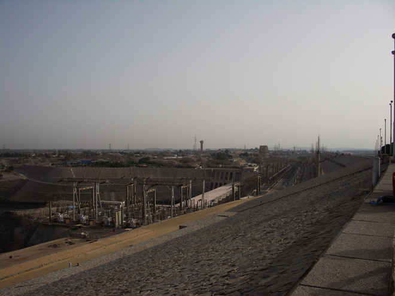
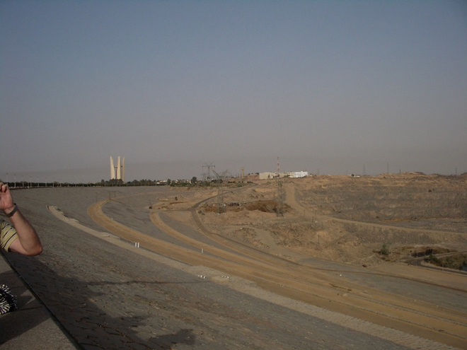
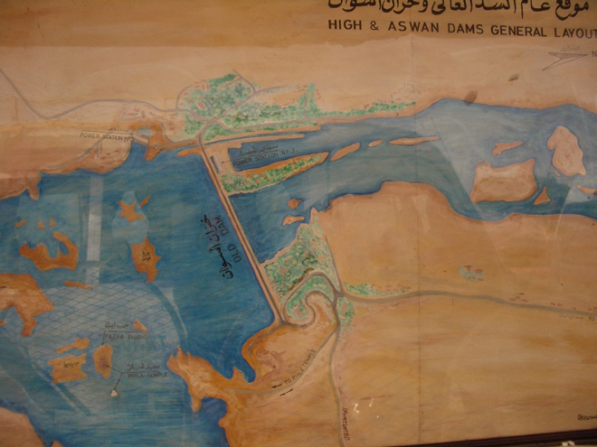
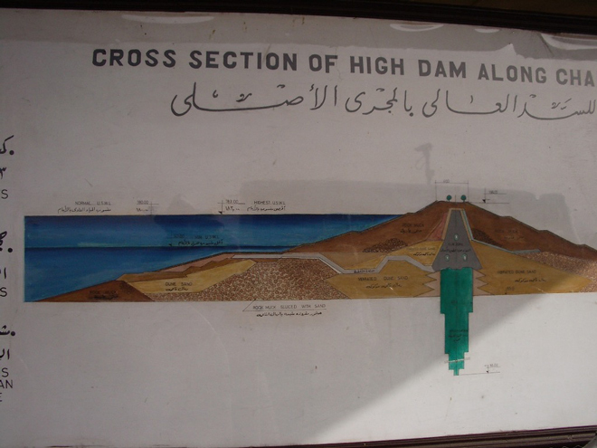
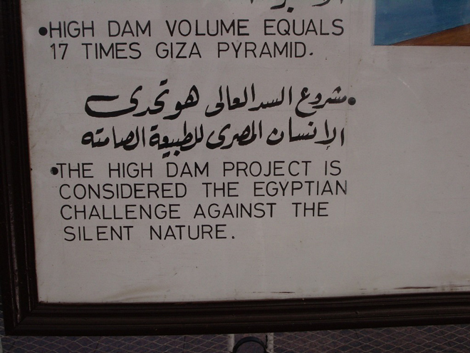
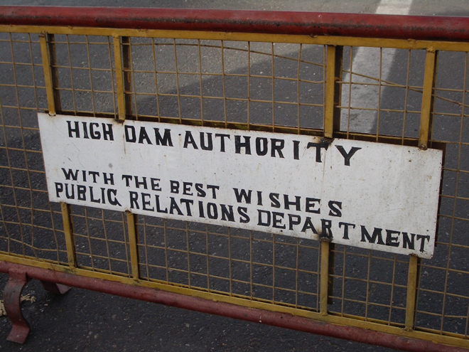